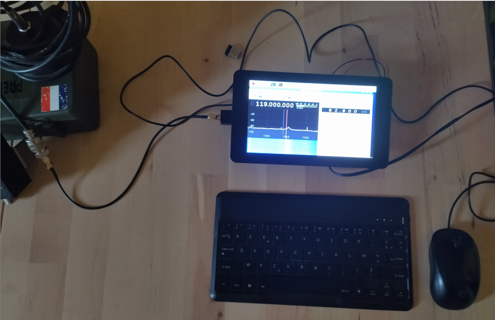

Pour ce projet c'est mon père qui m'a donné l'idée, comme il possède plusieurs Cb et autre scanner, et que je m'y intéresse aussi, il avait acheté une clé SDR (pour Software Defined Radio).
Ce modèle ci de chez NooElec, permet de réceptionner de 22MHz a 1700MHz. On peut à l'aide d'un logiciel écouter ces fréquences, et même décoder des images en SSTV (j'y reviendrai), et sûrement d'autres protocoles que je ne connais pas.
Bien sûr ces logiciels fonctionnent très bien sur un ordinateur classique, mais je voulais réutiliser du matériel que j'avais depuis longtemps et qui ne servaient plus, entre autre une raspberry Pi et son écran 7 pouces.
L'objectif sera de tout placer dans une boite comme ci-dessus, afin de pouvoir l'emmener en montagne et l'utiliser avec une batterie externe 5V pour téléphones.
Bon pour commencer j'ai flasher une carte microSD avec Raspbian, l'OS linux propre aux raspberry pi.
Une fois téléchargé, on peut flasher la carte.
Une fois la carte insérée on peut démarrer le tout:
Je passe le processus de paramétrage car assez long. Une fois que tout fonctionne je peux brancher la clé SDR, et mettre des dissipateurs sur la raspberry pi.

Après je passe à l'installation de GQRX, le logiciel qui va nous permettre d'utiliser la clé.

Une fois le logiciel démarré on peut constater son fonctionnement car la cascade s'affiche lorqu'on appuie sur "Play".
On peut observer ici plusieurs choses: le niveau de perte en dBm de la réception à gauche, au centre la cascade, très pratique pour remarquer un pic soudain et donc une émission, la fréquence écoutée, et le niveau de réception en dBFS, décibel full scale.
A droite, on peut régler des paramètres comme le mode de démodulation: FM, narrow FM, et WFM mono/stéréo, Am, USB, LSB, CW pour le morse. Le squelch, qui permet de laisser passer que au dessus d'un certain niveau de réception et donc éliminer en partie le bruit. Filter width et shape permettent d'élargir la bande de fréquence reçue.
Enfin le noise blanker permet d'atténuer les bruits parasites.
On peut aussi utiliser audactiy en même temps ce qui très pratique pour enregistrer rapidement une session d'écoute:
Ici un enregistrement test sur la bande des 26-27MHz, fréquences des CB.
J'ai aussi installé un logiciel, QSSTV, pour décoder des trames SSTV, (slow scan television), hélas j'ai dû me contenter d'un son de test pour vérifier qu'il marche, car je ne captais rien qui puisse être décodé.
La station spatiale international en émet quelques fois, encore faut-il qu'elle passe au dessus au bon moment. Pour le fonctionnement il suffit d'émettre le son sur la même carte son, comme pour audacity. On peut écouter en même temps bien-sûr.

J'ai utilisé une de mes antennes de CB grâce à une prise SMA vers PL. Des antennes sont fournies avec la clé mais elles davantages adaptées à des fréquences plus hautes. Je n'avais pas l'antenne de mon poste sous la main, qui elle fait 1.5m et est un peu plus adaptée à cette plage. Je pense qu'en montagne ou sur un toit la réception sera largement mieux.
Enfin pour finir, un peu de customisation. J'ai changé le splash-screen de démarrage du raspberry pi par ce logo :
Après j'ai ajouté un bouton extinction, car le bouton shutdown avait une chance sur deux d'empêcher la raspberry d'afficher le bureau à la mise sous tension..
Ci-dessus le bouton "Shutdown customisé", et ci-dessous le script, qui fait la commande sudo halt. J'ai aussi rajouté une icône pour que ça rende mieux.
Bon je n'ai pas encore tout assemblé dans la boîte j'aurais bien mis une photo sinon, mais je compte intégrer un panneau en bois qui contiendra des prises usb, jack, et la prise sma en façade. L'écran sera disposé aussi sur le panneau. Sur le couvercle sera attaché un petit clavier bluetooth qui sera maintenu avec des bandes scratchs.
Le tout sera alimenté par une batterie de 10 000 mAh, ce qui devrai forunir approximativement 2h30 d'autonomie. On pourra l'interchanger avec une autre, ou la recharger via une prise microUSB en façade.
La boîte sera ainsi étanche et contiendra tout pour faire de l'écoute, exceptée les antennes.